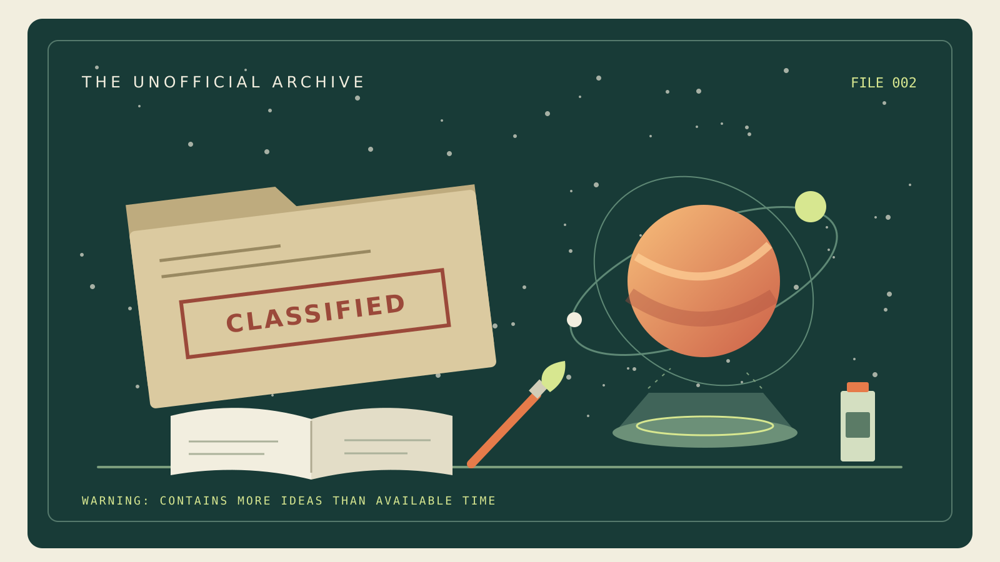

Inside the Workshop
You have entered the unofficial archive. These are the details usually discovered halfway through a project, immediately after someone says, "This should be straightforward."

Three Fun Facts
- I give paintings unrealistic career expectations. Apparently, hanging on a wall is no longer enough. Now they are expected to move, tell stories, and possibly become an app.
- My imagination does not recognize project boundaries. A conversation about a comic can become a discussion about animation, sound, augmented reality, and an entire interactive world.
- I am building a universe called ForeverStar. It explores planets and immersive experiences. The slightly exaggerated version is that I needed more space for my ideas, so I started making my own.
A Survival Guide for Working with Me
- Start with the story. Tell me what the audience should feel.
- Show me something visual. A sketch, reference image, or rough prototype gives us a place to begin.
- Define what we are finishing today. Otherwise, the small prototype may acquire three sequels.
- Save a backup. Preferably before the computer decides it needs a dramatic character arc.
- Give honest feedback. "This part is confusing" helps more than pretending everything is perfect.
- Leave room for an experiment. The unexpected result might be the interesting part.
Greatest Weaknesses
- Scope creep: A modest idea can mysteriously become a multi-platform experience.
- "One more version": There is always another lighting adjustment or storytelling possibility.
- Render bars: Watching a computer think is less exciting than making a universe.
Known countermeasure: A clear deadline and a precise definition of "finished."
Future Ambitions
I want to build a creative company that brings art and stories to life. My ambitions include animated paintings, interactive books and comics, and immersive experiences people can share.
I also want to keep developing ForeverStar into a cinematic experience that connects play on a phone with a larger shared world. The goal is to create something beautiful and emotionally memorable that people want to return to.
My completely reasonable long-term ambition is to make people forget they are looking at technology because they are too busy caring about the story.